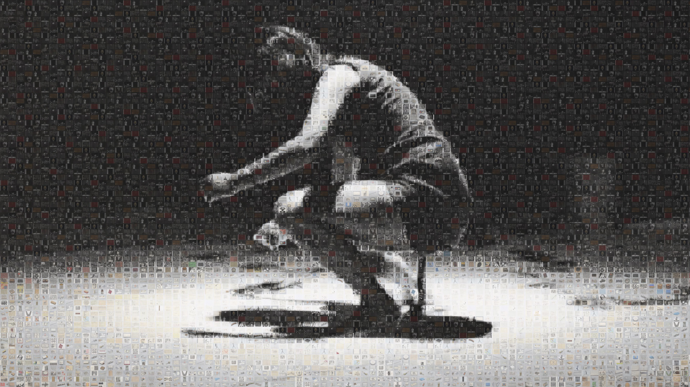

Experience the same collection of 2,847 Fluxus artworks through two complementary curatorial approaches, each revealing different patterns and insights about this revolutionary art movement.
Artworks arranged chronologically from 1953-1984, revealing the movement's development across three distinct eras. This view shows how Fluxus evolved from experimental compositions to international festivals to institutional integration.
Artworks organized by medium type in six categories, revealing how Fluxus artists challenged traditional material boundaries and embraced interdisciplinary experimentation across painting, sculpture, photography, and more.
Our Medium Explorer organizes the Fluxus collection by artistic materials and techniques, revealing how different mediums contributed to the movement's revolutionary approach to art-making.
Rather than viewing artworks chronologically, this visualization groups them by their physical properties—painting, drawing, sculpture, photography, printmaking, and mixed media—creating a new perspective on Fluxus experimentation.
Traditional and experimental painted works that challenged conventional approaches to canvas, color, and composition.
Sketches, studies, and finished drawings that captured the spontaneous and conceptual nature of Fluxus practice.
Multiples, lithographs, and experimental printmaking that democratized art distribution and challenged uniqueness.
Three-dimensional works and installations that expanded the definition of sculptural practice and spatial experience.
Documentary and artistic photography that captured performances, events, and conceptual investigations.
Hybrid works combining multiple materials and techniques, embodying Fluxus's interdisciplinary approach.
Discover how Fluxus artists used different mediums to challenge artistic conventions and explore new forms of expression.
Explore by Medium